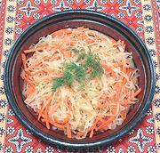

|
Sauerkraut SlawPoland - Surówka z Kiszonej Kapusty | ||||
| Makes: Effort: Sched: DoAhead: |
1-1/8 # ** 20 min Yes |
Sauerkraut is extremely popular with the peoples of Poland, Germany, Ukraine and Hungary. Surówkas, raw salads of shredded vegetables are very popular in Poland, and will not wilt on the buffet. | |||
|
11 6 4 ----- 2 1/2 3 1/3 ---- |
oz oz oz --- T t T t --- |
Sauerkraut (1) Onions Carrots -- Dressing Wine Vinegar, white Sugar Olive Oil, ExtV Pepper (2) --------------- |
Make - (20 min + 1 or more hrs rest)
|